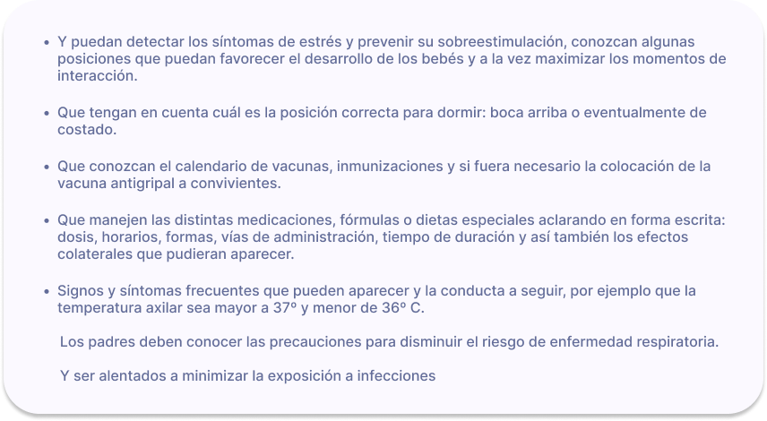

Guía informativa

¡Bienvenidos a nuestra guía informativa para padres!
Nuestra informacion esta orientada a acompañarte a dar los primeros pasos de como asistir a tu bebé en la etapa de hospitalizacion.
Navegar por la hospitalización de un bebé puede ser abrumador, pero queremos brindarles el apoyo necesario para que se sientan capacitados y tranquilos.
BIENESTAR PARA PADRES
Bienestar emocional
Madres fuertes, hijos felices
Prioriza tu bienestar
“Dedica tiempo a tu recuperación postparto y cultiva un equilibrio saludable para el bienestar de ambos."
Qué cuidados realizar durante el Postparto:
- Descansa: Deben darte tiempo y espacio. Recuerde que su bebé está siendo atendido las 24 horas por el equipo de salud.
- Nutrición equilibrada: Es crucial para la recuperación y la producción de leche.
- Cuida las heridas: Si tuviste una cesárea o un parto vaginal, sigue las indicaciones del médico para cuidar cualquier incisión o herida.
- Ejercicio gradual: Inicia con actividades suaves y paseos cortos. Es normal que quieras visitar a tu bebé casi de inmediato, pero al principio podrías sentirte débil y necesitar ayuda.
- Cuidado de mamas,amamantar o utilizar sacaleche cuando corresponda, facilitar salida de la leche con paños tibios , masajes suaves.
- Acepta ayuda: Permitir que otros te apoyen te dará tiempo para descansar y recuperarte.
- Establece rutinas diarias: Establecer rutinas, como visitar al bebé en horarios regulares, puede proporcionar estructura y estabilidad emocional.
Nutrición durante la lactancia
La nutrición durante la lactancia puede generar confusión. ¿Cuánto debes comer? ¿Qué debes evitar? ¿Cómo puede afectar tu dieta al bebé? Sigue estos importantes consejos sobre nutrición.
El consumo de una variedad de alimentos diferentes durante la lactancia cambiará el sabor de la leche materna.
Esto expondrá a tu bebé a distintos sabores, que pueden ayudarlo a aceptar alimentos sólidos con mayor facilidad más adelante.
Todo esto puede parecer un reto injusto cuando vos y tu pareja ya están lidiando con las exigencias de un bebé prematuro. Pero tomar la decisión de dar el pecho y seguir la rutina de extracción y alimentación se verá recompensado.
Empezarás a ver cómo tu bebé gana peso y crece fuerte y sano ante tus ojos. Además, de la lactancia materna, otra forma de establecer un vínculo con tu bebé prematuro y favorecer su desarrollo es practicar el contacto piel con piel.
Comprende la información básica sobre la nutrición con leche materna.
¿Tengo que consumir más calorías mientras estoy amamantando?
Sí, es posible que tengas que comer un poco más (unas 330 a 400 calorías adicionales al día) para recibir la energía y los nutrientes para producir leche.
Para obtener estas calorías adicionales, elige alimentos ricos en nutrientes, como una rebanada de pan integral con una cucharada (unos 16 gramos) de mantequilla de cacahuate (maní), un plátano o una manzana medianos y 8 onzas (unos 227 gramos) de yogurt.
¿Qué alimentos debería comer cuando estoy amamantando?
Concéntrate en tomar decisiones saludables que favorezcan la producción de leche. Opta por alimentos ricos en proteínas, como carnes magras, huevos, lácteos, frijoles, lentejas y mariscos con bajo contenido de mercurio. Elige una variedad de cereales integrales, como también frutas y verduras.
Para garantizar que tú y tu bebé reciban todas las vitaminas que necesitan, tu médico puede recomendarte que continúes tomando un suplemento diario de multivitaminas y minerales hasta que dejes de amamantar.
¿Cuánto líquido necesito mientras estoy amamantando?
Bebe cuando tengas sed, y bebe más si tu orina es de color amarillo oscuro. Podrías beber un vaso de agua u otra bebida cada vez que amamantes.
Ten cuidado con los jugos y las bebidas azucaradas. El exceso de azúcar puede contribuir al aumento de peso o sabotear tus esfuerzos para perder el peso del embarazo. El exceso de cafeína también puede ser problemático. Limítate a no más de dos o tres tazas (16 a 24 onzas [473 a 710 mililitros]) de bebidas con cafeína al día. La cafeína en la leche materna puede agitar al bebé o interferir en su sueño.
¿Qué ocurre con la dieta vegetariana y la lactancia?
Si sigues una dieta vegetariana, es muy importante que elijas alimentos que te proporcionen los nutrientes que necesitas. Por ejemplo:
- Elige alimentos ricos en hierro, proteínas y calcio. Las buenas fuentes de hierro incluyen las lentejas, los cereales enriquecidos, las verduras de hojas verdes, las arvejas (guisantes, chícharos) y las frutas secas, como las uvas pasas. Para ayudar a que tu cuerpo absorba el hierro, come alimentos ricos en hierro junto con alimentos con alto contenido de vitamina C, como las frutas cítricas.
En cuanto a las proteínas, ten en cuenta las fuentes vegetales, como los productos de soja y los sustitutos de la carne, las legumbres, las lentejas, los frutos secos, las semillas y los cereales integrales. Los huevos y los productos lácteos son otras opciones.
Las buenas fuentes de calcio incluyen productos lácteos y verduras de hojas color verde oscuro. Otras opciones incluyen productos enriquecidos y fortificados con calcio, como jugos, cereales, leche de soja, yogurt de soja y tofu.
- Considera incorporar suplementos. Es probable que tu proveedor de atención médica te recomiende un suplemento diario de vitamina B12. La vitamina B12 se encuentra casi exclusivamente en productos de origen animal, por lo tanto, es difícil obtener una cantidad suficiente a partir de dietas vegetarianas. Si no comes pescado, puedes considerar la posibilidad de hablar con tu proveedor de atención médica sobre la posibilidad de tomar un suplemento de omega 3.
Si no comes suficientes alimentos fortificados con vitamina D, como la leche de vaca y algunos cereales, y te expones poco tiempo al sol, es posible que necesites suplementos de vitamina D. Tu bebé necesita vitamina D para absorber el calcio y el fósforo. La falta de vitamina D puede provocar raquitismo, una afección que descalcifica y debilita los huesos. Habla con tu médico y el médico de tu bebé si también le estás dando un suplemento de vitamina D a tu bebé.
¿Mi dieta puede hacer que mi bebé esté molesto o tenga una reacción alérgica?
Hay determinados alimentos o bebidas de tu alimentación que podrían hacer que tu bebé se irrite o tenga una reacción alérgica. Si el bebé se torna molesto o presenta sarpullido, diarrea o sibilancia poco después de amamantarlo, consulta con el proveedor de atención médica del bebé.
Si sospechas que hay algo en la alimentación que podría estar afectando al bebé, evita el alimento o la bebida hasta por una semana para ver si cambia el comportamiento del bebé. Evitar ciertos alimentos, como el ajo, la cebolla o el repollo, podría ser útil.
Recuerda que no es necesario hacer una dieta especial mientras amamantas. Simplemente concéntrate en tomar decisiones saludables, y tú y tu bebé se beneficiarán.
Momento del alta

El momento del alta permite establecer una nueva relación con su hijo, similar a la que está presente en el momento del nacimiento.
Por eso el alta adquiere gran importancia emotiva para los padres, en el que pueden aflorar angustias y ansiedades respecto del rol que recae sobre ellos: cuidar solos y en casa a su hijo.
Los criterios para el alta institucional están relacionados en primer lugar con las condiciones de salud del bebé:
- Que el peso sea mayor a 2000 grs. y que se observe un aumento de peso estable durante los últimos cinco días de internación.
- Que esté en condiciones de mantener una temperatura corporal vestido normal, en cuna, fuera de la incubadora y con 21 a 23 º C ambiental.
- Que puedan ser amamantados en el pecho o artificialmente cada 3 o 4 horas.
- Que no presente episodios de apnea.
- Que presente un hematocrito no menor a 25%.
Además de evaluar los puntos citados anteriormente el equipo médico debe poner atención en cuál es el momento más adecuado para el regreso a la casa.
Es importante que se los invite a los papás a participar de algunos cuidados como: suministrarle al bebé las vitaminas, cambiar los pañales, la ropa al bebé y de la cuna, en los días previos al alta.
Además que los padres conozcan a su bebé:
CUIDADO DEL BEBÉ
¿Qué cuidados debo tener en casa?
- No permitir grandes grupos de personas en el medio que rodea al bebé. Limitar el número de personas que lo cuidan.
- Lavarse las manos antes y después de sostener al niño.
- Evitar el contacto con personas afectadas por enfermedades respiratorias o gastrointestinales. Los niños pequeños que asisten a escuelas son frecuentemente afectados por enfermedades virales. Por esta razón no se recomienda la asistencia a jardines maternales de los niños de alto riesgo durante los primeros 6 a 12 meses luego del alta.
- Evitar la exposición al humo de cigarrillo.
- Promover el amamantamiento, aún cuando el bebé no haya recibido leche humana durante la internación.
- Evitar el contacto con animales domésticos.
Cuando están dadas las condiciones para que el niño sea dado de alta y que la familia esté preparada para recibirlo, el equipo médico programa con anticipación el alta.
En ese momento el equipo profesional debe sugerirle a los padres algunas pautas sobre la crianza: como la higiene, patrones de sueño, vestimenta, juegos, salidas y viajes que un niño de alto riesgo requiere, como así también la adecuación del medio ambiente del hogar.
Los papás deben exponer todas sus dudas y sentirse seguros para llevar el niño a la casa. Además deben tener anotado a donde dirigirse y con quienes comunicarse en caso de dudas o urgencias: tener a mano nombres, apellidos, teléfonos y direcciones.
Se fija entonces el control de seguimiento ambulatorio post-alta, que será definido por el equipo médico de acuerdo a las necesidades de cada niño, a fin de evaluar la persistencia o no de riesgos e implementar acciones, en el caso que fuera necesario, que permitan obtener buenos resultados para su desarrollo.
Se redacta un resumen de historia clínica bastante detallada sobre el período de internación del niño, informe necesario para el pediatra de cabecera que luego lo tomará a cargo y una copia para los padres.
En la primera visita se verifica el estado de salud del niño, se evalúa la adaptación al ambiente hogareño y responder las dudas de los papás. Por lo que es conveniente que la citación sea de 1 a 5 días luego del alta de internación y luego de acuerdo a sus necesidades presentando un segundo control de 7 a 10 días luego del alta y un tercero 2 semanas después.
Las controles posteriores, durante el primer año de vida, deben ser mensuales a menos que por las necesidades del niño se exijan controles más frecuentes.
Además el equipo de seguimiento fijará las inter-consultas a los especialistas (oftalmólogo, traumatólogo, fonoaudiólogo, etc.) o exámenes complementarios como: oftalmológico, audiológico, hemograma, ecografía cerebral, control neurológico si fuera necesario.
Luego, del primero al segundo año de vida pueden programarse controles trimestrales y posteriormente cada 6 meses hasta cumplir 4 años.
Después se debe realizar como mínimo un control anual hasta el egreso escolar.
Los papás deben solicitar a los médicos que les explique el concepto edad corregida y que de esta forma no se desalienten al comparar a su hijo con otros niños, al leer textos sobre el desarrollo de los bebés o si es juzgado por su edad cronológica.
¿Qué controles necesitará el bebe luego del alta?
Los papás son partícipes activos en el cuidado y estimulación del neurodesarrollo, son los verdaderos “estimuladores /habilitadores” y el equipo de salud es el intérprete del comportamiento del niño, y son los encargados de las tareas habituales del cuidado de su bebé.
Los controles van a diferir según la edad gestacional, el peso al nacer y las complicaciones que pudieran haber surgido durante su internación.
Los más comunes son:
- Seguimiento de prematuros por profesionales especializados en el tema.
- Fondo de ojo.
- Otoemisiones acústicas y potenciales evocados (área auditiva).
- Ecografías de cerebro y cadera (preventivo).
- Controles mensuales pediátricos (al igual que los nacidos a término).
- Psicología Perinatal (evaluaciones al niño, acompañamiento y/o tratamiento a padres).
También podrá necesitar estimulación temprana, controles neurológicos, fonoaudiológicos, kinesiológicos y de cualquier otra área que pudo haberse visto comprometida en cada caso en particular.
El cuidado del bebé en Neonatología
Por algún tiempo tu bebe necesita vivir en un lugar especial que es la NEO, el servicio de Neonatología.
¿Que significa que mi bebé haya nacido prematuro?
Todos los bebés en el vientre materno necesitan un proceso de maduración para poder nacer con sus funciones aptas. El nacimiento a término abarca desde la semana 37 a la 42 de edad gestacional.
Es bebé prematuro, cuando no cumplió con el proceso de maduración biológica y por lo tanto es pre-maduro, o sea que nació antes de las 37 semanas de edad gestacional (EG).
UNICEF plantea la siguiente clasificación de niños nacidos prematuros:
Prematurez moderada con una EG de 31 a 36 semanas
Extrema, entre 30 y 28 semanas
Muy extrema, nacidos antes de las 28 semanas
La OMS tiene en cuenta el peso de nacimiento del niño, por lo tanto llama recién nacido de bajo peso a quienes nacieron con menos de 2500 gramos, recién nacido de muy bajo peso a los que nacieron con un peso inferior a 1500 gramos y recién nacido de extremado bajo peso si es inferior a 1000 gramos.
También se puede suceder que el recién nacido tenga un peso inferior al que le corresponde para su edad gestacional
Es importante saber que su bebé no va a ser prematuro para siempre, él o ella nació prematuro . Pero con el tiempo, el bebé irá ganando semanas de edad gestacional, peso y habilidades.
Hay tres “edades” que hay que tener en cuenta para un bebé prematuro:
- Edad gestacional: La edad gestacional de un bebé prematuro es la cantidad de semanas completadas en el útero al momento del nacimiento, calculada a partir de las fechas menstruales de la madre y las características de maduración del bebé al nacer.
- Edad cronológica: Es el tiempo real transcurrido desde el nacimiento.
- Edad ajustada: Es la edad cronológica corregida por el grado de prematuridad.
¿Cómo es la NEO?
En la Neo existen numerosos equipos de monitoreo, incubadoras, respiradores y todo tipo de aparatología.
Es frecuente el sonido de alarmas. La luz, aunque se intenta atenuar, es intensa día y noche. Invariablemente algún paciente se encuentra muy grave y a su alrededor se nota preocupación.
La Neo cuenta médicos y enfermeras, atentos y preparados, para ayudar al bebe prematuro a superar algunas situaciones complicadas que a veces se presentan. Las complicaciones aparecen porque el bebé todavía no estaba listo para vivir separado de la mamá.
Los bebés prematuros necesitan mucha ayuda para superar los problemas que tienen para sobrevivir y crecer...
El ingreso debe ser irrestricto. Se intenta que cada vez más las UCIN sean abiertas a los padres y que no sean considerados una visita sino parte del equipo, atendiendo a los derechos del prematuro y su familia, planteados por UNICEF.
Los cuidados que se brindan en la Neo están dirigidos a:
- Mantener la temperatura
- Lograr una alimentación adecuada
- Lograr una buena cantidad de oxígeno en la sangre
- Mantener una respiración adecuada
- Proteger el sistema inmunológico del bebé


Cuidados que pueden Brindar los Padres

El contacto inicial con el niño puede estar acompañado de temor y de angustia.
Habrá que familiarizarse con la incubadora, los monitores, los sonidos de las alarmas y con un plantel numeroso de personas.
Empezar a asumir un papel activo en el cuidado de su hijo,encontrar la confianza en sí mismos para cuidar del niño es una manera de expresarle cariño y demostrarle aceptación.
Necesitaran indicaciones y orientaciones sobre todo del personal de enfermería.
Notarás que las incubadoras están tapadas esto se debe a que ellos necesitan periodos largos de sueño tranquilo e ininterrumpido para poder crecer y desarrollarse, como lo habrían hecho en el útero.
Podrá participar de distintas maneras en el cuidado de tu hijo a través de acciones lentas y pausadas , de a uno por vez .
No es recomendable hacerle muchas caricias ya que es un tipo de estímulo que el bebé todavía no podrá manejar hasta haber ganado mayor madurez.
Contacto piel a piel (COPAP)
Consiste en sacar al bebe de la incubadora, se realiza con el bebé desvestido solo con el pañal y un gorrito y en contacto directo con la piel materna, el padre también puede realizar esta actividad con su hijo.
Es una práctica simple y segura que produce beneficios para el bebé y para la mamá.


Alimentación
La Organización Mundial de la Salud (OMS) detalla que la lactancia materna es una de las formas más eficaces de garantizar la salud y la supervivencia de los niños.
Es segura y limpia y contiene anticuerpos que protegen de muchas enfermedades propias de la infancia. Además, suministra toda la energía y nutrientes que un bebé necesitá.


¿Cuándo debo extraer leche materna?
A veces no es posible amamantar directamente a un bebé prematuro al principio. Esto podé deberse a que tu bebé prematuro aún no ha desarrollado la capacidad de coordinar la succión, la deglución y la respiración necesarias durante la alimentación, o la fuerza necesaria para amamantar por lo que es posible que tengas que extraer leche materna.
- La extracción de leche debería iniciarse dentro de las 12 horas luego del parto.
- Las extracciones deben realizarse cada 3-4 horas.
- La mamá deberá asistir al taller de lactancia materna que se da en la misma institución.
Para mantener la producción de leche materna necesitarás:
- Necesita períodos de descanso y buena alimentación para asegurar un buen volumen de leche. El papá es responsable de asegurar el descanso y la adecuada alimentación de la madre.
- Necesita contacto piel a piel con su bebé
- Necesita compartir su experiencia con otras madres
- Necesita el apoyo del equipo de salud. Puede necesitar alguna medicación que indicará el médico.
Ropa y Pañales
La piel del bebe es la primera línea de defensa que ayuda a proteger de infecciones y a regular la temperatura.
Cuando nace antes de tiempo su barrera cutánea está menos desarrollada y no puede realizar todas sus funciones , es muy sensible y frágil.
La ropa del bebé prematuro es todo un desafío , todo lo queda grande y hay muy pocas opciones, además deben contar con la característica de que permita trabajar sin problemas a los médicos, enfermeros y kinesiólogos, como botones que permitan poner y sacar la ropa fácilmente en caso de alguna urgencia y además que permita observar los sitios de punción y acceso de vías.

¿Que ropa escoger para el bebé?
- Tamaño adecuado
- Opta por telas suaves y transpirables como el algodón.
- Ofrezcan un fácil acceso a todas las partes del cuerpo de tu bebé, diseñadas para facilitar su uso durante el periodo de internación.
- Ropa con aberturas amplias , botones en parte frontal para facilitar la tarea de vestir al bebé y minimizar el estrés
- Limite el uso de adornos como lazos, botones decorativos o costuras rugosas que puedan causar molestias o irritar la piel del bebé.
- Lavar la ropa antes para eliminar posibles irritantes residuales.
- Utilizar detergentes suaves y sin fragancias al momentos de lavar
¿Estás usando el tamaño correcto de pañal?
Aquí hay algunas cosas que debes observar para asegurar su comodidad y evitar problemas como fugas o irritaciones:


¿Cómo evitar la dermatitis del pañal?
La dermatitis del pañal es una irritación cutánea común en los bebés, y puede ser más desafiante en los bebés prematuros debido a la sensibilidad de su piel. Aquí tienes algunos consejos para prevenirla:
- Cambio frecuente de pañales
- Limpieza suave
- Secado cuidadoso
- Uso de cremas protectoras
- Pañales adecuados
- Evitar productos irritantes
- Cambios después de evacuaciones
- Ropa transpirable
- Consulta al pediatra si notas que la dermatitis no mejora
- Atención a la dieta
Recuerda que cada bebé es único, y lo que funciona para uno puede no ser igualmente efectivo para otro. Siempre es recomendable seguir las indicaciones del pediatra y adaptar los cuidados según las necesidades específicas de su bebé.
FAMILIA
Visitas de Abuelos y Hermanos
Las internaciones son prolongadas y la ansiedad de la familia que queda fuera de la unidad se acrecienta.
Cada vez más hospitales y clínicas encuentran la posibilidad de hacer del servicio de Neonatología una atención que esté centrada en el bebé y la familia!
Para facilitar esa integración familiar se programan las visitas de abuelos y de hermanos bajo la supervisión de miembros del equipo de salud como una manera de acompañar a los padres y generar mayor apoyo familiar hacia ellos.


Antes de ingresar a la Neo para ver al bebé los abuelos deben participar en una “reunión ” en las que el personal les dará a conocer la forma en que se procederá la visita.
Asi mismo los hermanitos recibirán el acompañamiento e información previa adecuadas a su nivel de edad.
Los abuelos son un importante sostén para los nuevos padres de este niño
A los hermanos calma la ansiedad que tienen por saber cómo es su hermanito/a. Los niños pueden participar al enviarle dibujos, escoger su muñeco de apego y/o elegir las prendas de ropa para el bebé.